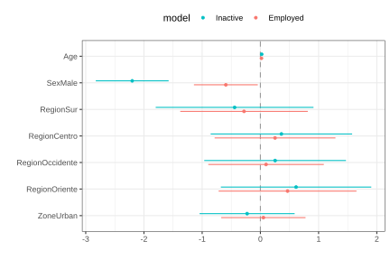

7.7 Modelo de regresión multinomial
En las encuestas de hogares, muchas variables de respuesta tienen más de dos categorías, como la situación de empleo (empleado, desempleado, inactivo). Para estas variables de tipo nominal se utiliza el modelo de regresión logística multinomial, extensión natural del modelo binario. Este modelo es apropiado cuando la variable dependiente tiene categorías mutuamente excluyentes y exhaustivas, no existe multicolinealidad entre las covariables, y se verifica una relación lineal entre las variables independientes continuas y la transformación logit de la variable dependiente.
El modelo multinomial especifica la probabilidad de pertenecer a la categoría \(k\) dado el vector de covariables \(\boldsymbol{x}_i\):
\[ Pr(Y_{ik}) = Pr(y_i = k \mid \boldsymbol{x}_i) = \frac{\exp(\beta_{0k} + \boldsymbol{\beta}_k \boldsymbol{x}_i)}{\sum_{j=1}^{m} \exp(\beta_{0j} + \boldsymbol{\beta}_j \boldsymbol{x}_i)}, \]
donde \(\boldsymbol{\beta}_k\) es el vector de coeficientes para la \(k\)-ésima categoría. La estimación de los parámetros maximiza la siguiente función de pseudo-verosimilitud multinomial (Heeringa et al., 2017):
\[ PL_{Mult}(\hat{\beta} \mid \boldsymbol{X}) = \prod_{i=1}^{n} \left\{ \prod_{k=1}^{K} \hat{\pi}_k(x_i)^{y_{i(k)}} \right\}^{w_i}, \]
donde \(y_{i(k)} = 1\) si \(y_i = k\) para la unidad \(i\), y \(w_i\) es su peso de muestreo. Las ecuaciones de estimación, que asumen un diseño con estratos indexados por \(h\) y conglomerados por \(\alpha\), son:
\[ S(\boldsymbol{\beta})_{Mult} = \sum_h \sum_\alpha \sum_i \omega_{h\alpha i} \left(y_{h\alpha i}^{(k)} - \pi_k(\boldsymbol{\beta})\right) x'_{h\alpha i} = 0 \]
con
\[ \pi_k(\boldsymbol{\beta}) = \frac{\exp(x'\boldsymbol{\beta}_k)}{1 + \sum_{k=2}^{K} \exp(x'\boldsymbol{\beta}_k)}, \qquad \pi_{1(ref)}(\boldsymbol{\beta}) = 1 - \sum_{k=2}^{K} \pi_k(\boldsymbol{\beta}) \]
La matriz de varianza-covarianza de los parámetros estimados, basada en la linealización de Taylor de Binder (1983), es:
\[ \hat{\text{Var}}(\hat{\boldsymbol{\beta}}) = (J^{-1}) \text{var}[S(\hat{\boldsymbol{\beta}})] (J^{-1}) \]
7.7.1 Ajuste usando svyVGAM
Para el ajuste del modelo usando R, como referencia inicial, se estiman las proporciones de personas por estado de empleo, primero sobre toda la muestra y luego restringiendo a mayores de 15 años, como se presenta en las Tablas 7.17 y 7.18:
diseno %>%
filter(!is.na(Employment)) %>%
group_by(Employment) %>%
summarise(Prop = survey_mean(vartype = c("se", "ci"))) | Employment | Prop | Prop_se | Prop_low | Prop_upp |
|---|---|---|---|---|
| Unemployed | 0.043 | 0.007 | 0.029 | 0.057 |
| Inactive | 0.384 | 0.015 | 0.354 | 0.414 |
| Employed | 0.573 | 0.014 | 0.545 | 0.601 |
diseno %>%
filter(Age >= 15) %>%
group_by(Employment) %>%
summarise(Prop = survey_mean(vartype = c("se", "ci")))| Employment | Prop | Prop_se | Prop_low | Prop_upp |
|---|---|---|---|---|
| Unemployed | 0.043 | 0.007 | 0.029 | 0.057 |
| Inactive | 0.384 | 0.015 | 0.354 | 0.414 |
| Employed | 0.573 | 0.014 | 0.545 | 0.601 |
El modelo multinomial se ajusta con la función svy_vglm() del paquete svyVGAM, tomando el desempleo como categoría de referencia:
library(svyVGAM)
diseno_15 <- diseno %>% filter(Age >= 15)
model_mul <- svy_vglm(
formula = Employment ~ Age + Sex + Region + Zone,
design = diseno_15,
crit = "coef",
family = multinomial(refLevel = "Unemployed")
)La función broom::tidy() no es directamente aplicable a objetos de clase svyVGAM. A continuación se define una función de compatibilidad5:
tidy.svyVGAM <- function(x, conf.int = FALSE, conf.level = 0.95,
exponentiate = FALSE, ...) {
ret <- as_tibble(summary(x)$coeftable, rownames = "term")
colnames(ret) <- c("term", "estimate", "std.error", "statistic", "p.value")
coefs <- tibble::enframe(stats::coef(x), name = "term", value = "estimate")
ret <- left_join(coefs, ret, by = c("term", "estimate"))
if (conf.int) {
ci <- broom:::broom_confint_terms(x, level = conf.level, ...)
ret <- dplyr::left_join(ret, ci, by = "term")
}
if (exponentiate) ret <- broom:::exponentiate(ret)
ret %>%
tidyr::separate(term, into = c("term", "y.level"), sep = ":") %>%
arrange(y.level) %>%
relocate(y.level, .before = term)
}Los coeficientes estimados del modelo, presentados en la Tabla 7.19, muestran la relación entre las covariables y la probabilidad de pertenecer a cada categoría de empleo relativa a la categoría de referencia:
| y.level | term | estimate | std.error | statistic | p.value |
|---|---|---|---|---|---|
| 1 | (Intercept) | 2.381 | 0.770 | 3.092 | 0.002 |
| 1 | Age | 0.022 | 0.011 | 2.108 | 0.035 |
| 1 | SexMale | -2.202 | 0.319 | -6.895 | 0.000 |
| 1 | RegionSur | -0.443 | 0.691 | -0.641 | 0.522 |
| 1 | RegionCentro | 0.361 | 0.620 | 0.582 | 0.560 |
| 1 | RegionOccidente | 0.253 | 0.621 | 0.407 | 0.684 |
| 1 | RegionOriente | 0.613 | 0.659 | 0.930 | 0.352 |
| 1 | ZoneUrban | -0.228 | 0.416 | -0.547 | 0.584 |
| 2 | (Intercept) | 2.195 | 0.628 | 3.495 | 0.000 |
| 2 | Age | 0.018 | 0.009 | 2.059 | 0.040 |
| 2 | SexMale | -0.593 | 0.280 | -2.120 | 0.034 |
| 2 | RegionSur | -0.281 | 0.559 | -0.503 | 0.615 |
| 2 | RegionCentro | 0.252 | 0.529 | 0.475 | 0.634 |
| 2 | RegionOccidente | 0.097 | 0.506 | 0.192 | 0.848 |
| 2 | RegionOriente | 0.467 | 0.604 | 0.773 | 0.440 |
| 2 | ZoneUrban | 0.052 | 0.369 | 0.139 | 0.889 |
La Figura 7.5 presenta los intervalos de confianza para los coeficientes del modelo, permitiendo identificar visualmente los términos significativos:
library(dotwhisker)
tidy.svyVGAM(model_mul, exponentiate = FALSE, conf.int = FALSE) %>%
mutate(
model = if_else(y.level == 1, "Inactive", "Employed"),
sig = gtools::stars.pval(p.value)
) %>%
dotwhisker::dwplot(
dodge_size = 0.3,
vline = geom_vline(xintercept = 0, colour = "grey60", linetype = 2)
) +
guides(color = guide_legend(reverse = TRUE)) +
theme_bw() +
theme(legend.position = "top")
Figura 7.5: Intervalos de confianza para los coeficientes del modelo multinomial
7.7.2 Ajuste usando svymultinom
Una alternativa que facilita la obtención de predicciones es la función svymultinom() del paquete CMAverse. Esta función debe instalarse desde GitHub y no está disponible en CRAN, presentada en la Tabla 7.20:
# devtools::install_github("BS1125/CMAverse")
library(CMAverse)
model_mul2 <- svymultinom(
formula = Employment ~ Age + Sex + Region + Zone,
weights = diseno_15$variables$wk2,
data = diseno_15$variables
)| Estimate | Std. Error | t value | Pr(>|t|) | |
|---|---|---|---|---|
| Inactive:(Intercept) | 2.348 | 0.447 | 5.251 | 0.000 |
| Inactive:Age | 0.031 | 0.009 | 3.662 | 0.000 |
| Inactive:SexMale | -2.160 | 0.278 | -7.784 | 0.000 |
| Inactive:RegionSur | -0.417 | 0.366 | -1.139 | 0.255 |
| Inactive:RegionCentro | 0.381 | 0.438 | 0.870 | 0.384 |
| Inactive:RegionOccidente | 0.180 | 0.409 | 0.440 | 0.660 |
| Inactive:RegionOriente | 0.192 | 0.413 | 0.465 | 0.642 |
| Inactive:ZoneUrban | -0.519 | 0.256 | -2.025 | 0.043 |
| Employed:(Intercept) | 2.271 | 0.434 | 5.238 | 0.000 |
| Employed:Age | 0.026 | 0.008 | 3.168 | 0.002 |
| Employed:SexMale | -0.556 | 0.268 | -2.078 | 0.038 |
| Employed:RegionSur | -0.328 | 0.352 | -0.932 | 0.351 |
| Employed:RegionCentro | 0.301 | 0.419 | 0.718 | 0.473 |
| Employed:RegionOccidente | 0.094 | 0.396 | 0.238 | 0.812 |
| Employed:RegionOriente | 0.179 | 0.401 | 0.447 | 0.655 |
| Employed:ZoneUrban | -0.292 | 0.246 | -1.188 | 0.235 |
Una ventaja de esta implementación es la facilidad para obtener predicciones de probabilidad. Las probabilidades predichas para las primeras observaciones se presentan en la Tabla 7.21:
| Unemployed | Inactive | Employed |
|---|---|---|
| 0.0233 | 0.2343 | 0.7424 |
| 0.0098 | 0.5892 | 0.4010 |
| 0.0244 | 0.5386 | 0.4371 |
| 0.0687 | 0.1866 | 0.7447 |
| 0.0085 | 0.5965 | 0.3950 |
| 0.0250 | 0.5369 | 0.4381 |
| 0.0295 | 0.2242 | 0.7463 |
| 0.0117 | 0.5802 | 0.4082 |
| 0.0577 | 0.1947 | 0.7477 |
| 0.0165 | 0.2490 | 0.7345 |
| 0.0055 | 0.6178 | 0.3767 |
| 0.0424 | 0.2084 | 0.7492 |
| 0.0483 | 0.2027 | 0.7491 |
| 0.0622 | 0.1912 | 0.7466 |
| 0.0521 | 0.1993 | 0.7487 |
Las proporciones estimadas por estado de empleo según las predicciones del modelo, comparadas con las estimaciones directas de la encuesta, se presentan en la Tabla 7.22:
diseno_15 %>%
group_by(Employment) %>%
summarise(Prop = survey_mean(vartype = c("se", "ci"))) %>%
tabla_fmt()| Employment | Prop | Prop_se | Prop_low | Prop_upp |
|---|---|---|---|---|
| Unemployed | 0.043 | 0.007 | 0.029 | 0.057 |
| Inactive | 0.384 | 0.015 | 0.354 | 0.414 |
| Employed | 0.573 | 0.014 | 0.545 | 0.601 |
El porcentaje de personas desempleadas es del 4.48%, el de inactivas del 37.9% y el de empleadas del 57%, en concordancia con los resultados del modelo.